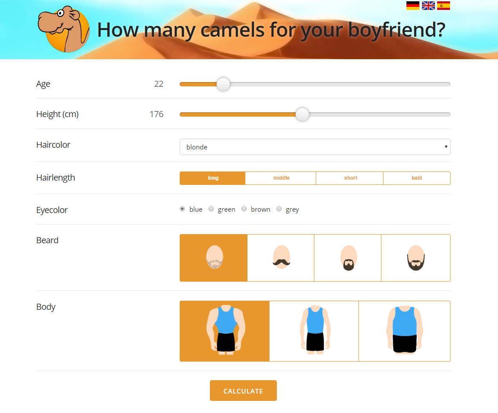
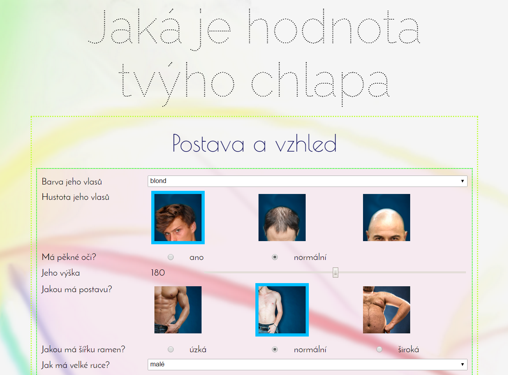

Úkol z lekce 5
Jakou hodnotu má váš chlap
Úkolem je naprogramovat aplikaci na výpočet hodnoty muže.
Můžete si vybrat mezi velbloudí a Hančinou verzí.
Demo velbloudí verze úkolu můžete vidět zde: kamelrechner.eu/en
Demo Hančiny verze úkolu můžete vidět zde: https://koala.tomcat.cloud/ukol05
Rady na cestu
Budete-li chtít použít "šoupátko":
kód pro samotné šoupátko je
<input type="range" name="vyska" min="140" max="220" value="180">
a bude plně fungovat. Pokud jej ale chcete doplnit o políčko, ve kterém bude zobrazená aktuální
hodnota, je potřeba maličko složitější zápis...
Nejprve musíte v HTML kódu změnit předchozí zápis na toto:
<output for="vyska">180</output>
<input type="range" id="vyska" name="vyska" min="140" max="220" value="180">
a po té musíte do sekce <head> přidat JavaScriptový kód, který zajistí právě
změnu hodnoty v políčku na základě aktuální pozice šoupátka.
<script>
window.onload = init;
function init() {
var pole = document.querySelectorAll('input[type=range]');
for (var i = 0; i < pole.length; i++) {
pole[i].addEventListener('input', zmenaHodnoty);
}
}
function zmenaHodnoty() {
var vystup = document.querySelector('output[for=' + this.id + ']');
vystup.innerText = this.value;
}
</script>
tento kód jste dostaly na hodině v souboru js.txt.